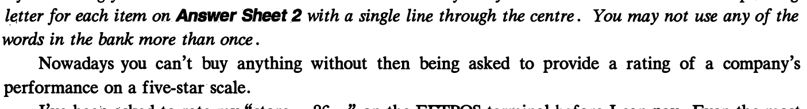
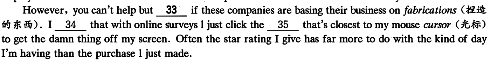
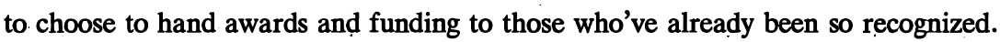
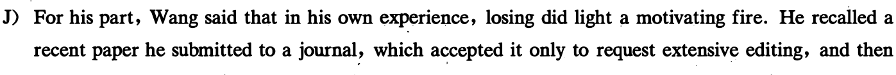
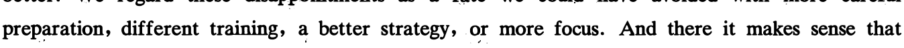

本页部分文字层异常，已保留原图文字区域；这些区域随窗口缩放，暂不能重新换行或复制。
2021年6月大学英语四级考试真题（三）
Part I Writing (30 minutes)
Directions: For this JJ(lrt , you are allowed 80 minutes to write an es皿ytitled "Do吻lent志eogames l已to 吻lence? ". The statement given below is for your reference . You should write at least丝Q_ words but no more than型words. A growing body of res纽rch finds t血t吻lent诅eo games can mtike应s act aggressively in their real world relationships, causing an increase in吻lence.
Part I Listening Comprehension (25 minutes)
说明：由千2021年6月四级考试全国共考了两套听力，本套真题听力与前两套内容相同，只是选项顺序不同，因此在本套真题中不再重复出现。
Part ][ Reading Comprehension (40 minutes)
Section A
Directions: In this 亚ction, there is a pas. 皿ge with ten blanks. You are required to select one word for each
blank from a l比t of choices given in a wotd bank following the pas. 皿ge. Read the pas. 皿ge through carefully
before making your choices. 压h choice in the bank is identified by a letter. Please mark the com芍劝uling

I've been asked to rate my "store 26 " on the EFfPOS terminal before I can pay. Even the most 27 activities, such as calling Telstra or picking up a parcel from Australia Post, are followed by texts or emails with surveys asking, 飞ow did we do?"
0血e purchases are 28 followed up by a customer satisfaction survey. Companies are so 29 for a hit of stars that if you delete the survey the company sends you another one.
We're 30 to rate our apps when we've barely had a chance to use them. One online course provider I use asks you what you think of the course after you've only completed _包_31 2 per cent of it.
Econom尪t Jason Murphy says that companies use customer satisfaction ratings because a 32 display of star feedback has become the nuclear power sources of the modem economy.

本页部分文字层异常，已保留原图文字区域；这些区域随窗口缩放，暂不能重新换行或复制。
Section B
Directions: In this section, you are going to read a passa.ge with ten statements attached to it. F.ach statement contains information given in one of the paragraphs. Identify the paragraph from which the 对ormation is derived. You may choose a paragraph more than once. F.ach paragraph is marked with a letter. Answer the questions by marking the correspa叫ing letter on Answer Sheet 2. Science of 瞬tba心：How failure can屿10\le career prospects
A) How do early career setbacks affect our long-term success? Failures can help us learn and overcome our fears. But disasters can still wound us. They can screw us up and set us back. Wouldn't it be nice if there was genuine, scientifically documented truth to the expression "what doesn't kill you makes you stronger''?
B) One way social scientists have probed the effects of career setbacks is to look at scientists of very similar qualifications. These scientists, for reasons that are mostly arbitrary, either just missed getting a research grant or just barely made it. In social sciences, this is known as examining "near misses" and "narrow wins" in areas where merit is subjective. That allows researchers to mea亚e only the effects of being chosen or not. Studies in this area have found conflicting results. In the competitive game of biomedical science, research has been done on scientists who narrowly lost or won grant money. It suggests that narrow winners become even bigger winners down the line. In other words, the rich get richer.
C) A 2018 study published in the Proceedi鸣'S of the National Academy of Sciences, for example, followed researchers in the Netherlands. Researchers concluded that those who just barely qualified for a grant were able to get twice as much money within the next eight years as those who just missed out. And the narrow winners were 50 percent more likely to be given a professorship.
D) Others in the US have found similar effects with National Institutes of Health early-career fellowships launching narrow winners far ahead of close losers. The phenomenon is often referred to as the Matthew effect, inspired by the Bible's wisdom that to those who have, more will be given. There's a good explanation for the phenomenon in the book匹Formula: The Universa.l La泗of Success by Albert Laszlo Barabasi. According to Barabasi, it's easier and less risky for those in positions of power

E) This is bad news for the losers. Small early career setbacks s氏m to have a disproportionate effect down the line. What didn't kill them made them weaker. But other studies using the same technique have shown there's sometimes no penalty to a near miss. Students who just miss getting into top high schools or universities do just as well later in life as those who just manage to get accepted. In this case, what didn't kill them simply didn't matter. So is there any evidence that setbacks might actually improve our career prospects? There is now.
F) In a study published in Nature Communications, Northwestern University sociologist Dashun Wang tracked more than 1, 100 scientists who were on the border between getting a grant and missing out between 1990 and 2005. He followed various measures of performance over the next decade. These included how many papers they authored and how influential those papers were, as measured by the number of subsequent citations. As expected, there was a much higher rate of attrit加（减员）among
本页部分文字层异常，已保留原图文字区域；这些区域随窗口缩放，暂不能重新换行或复制。
scientists who didn't get grants. But among those who stayed on, the close losers performed even better than the narrow winners. To malce sure this wasn't by chance,'Wang conducted additional tests using different performance measures. He examined how many times people were first authors on influential studies, and the like.
G) One straightforward reason close losers might outperform narrow winners is that the two groups have comparable ability. In Wang's study, he selected the most determined, passionate scientists from the loser group and culled (剔除）what he deemed the wealcest members of the winner group. Yet the persevering losers still came out on top. He thinks that being a close loser m烛t give people a psychological boost, or the proverbial kick in the pants.
H) Utrecht University sociologist Arnout van de Rijt was the lead author on_ the 2018 paper showing the rich get richer. He said the new finding is apparently reasonable and worth some attention. His own work showed that although the narrow winners did get much more money in the near future, the actual performance of the close losers was just as good.
I) He said the people who should be paying regard to the Wang paper are the funding agents who distribute government grant money. After all, by continuing to pile riches on the narrow winners, the taxpayers are not getting the maximum bang for their buck if the close losers are performing just as well or even better. There's a huge amount of time and effort that goes into the process of selecting
good at distributing money. "Maybe we should spend less money trying to figure out who is better than who," he函d, suggesting that some more equal dividing up of money might be more productive and
It may yet be a selection effect. Even though Wang tried to account for this by culling the we吐est winners, it's impossible to know which of the winners would have quit had they found themselves on the losing side.

reversed course and rejected it. He submitted the unedited version to a more respected journal and got accepted.
better. We regard these disappointments as a (ate we could have avoided with more careful

failures show us the road to success. These papers deal with a kind of failure people have little control over--rejection. Others determine who wins and who loses. B11t at the very least, the research is starting to show that early setbacks don't have to be fatal. They might even m吐e us better at our jobs. Getting paid like a w.inner, though? TI沮's a .different matter.
36. Being a close loser could greatly motivate one to persevere in their research.
37. Grant awarders tend to favor researchers already recognized in their respective fields.
38. Suffering early setbacks might help people improve their job performance.
39. Research by social scientists on the effects of career setbacks has produced contradictory findings.
本页部分文字层异常，已保留原图文字区域；这些区域随窗口缩放，暂不能重新换行或复制。
40. It is not to the best interest of taxpayers to keep giving money to narrow winners.
41. Scientists who persisted in research without receiving a grant made greater achievements than those
who got one with luck, as suggested in one study.
42. A research paper rejected by one journal may get accepted by another.
43. According to one recent study, narrow winners of research grants had better chances to be promoted
to professors.
44. One researcher suggests it might be more fruitful to distribute grants on a relatively equal basis.
45. Minor setbacks in their early career may have a strong negative effect on the career of close losers.
Section C
Directions: There are 2 passages in this section. 应ch passage is followed by some questions or unfinished statements. For each of them there are four choices marked A), B), C) and D). You should decide on the best choice and mark the co汀esponding letter on Answer Sheet 2 with a single line through the centre.
Passage One
Questions 46 to 50 are based on the following passage.
well as mental health. It is found that people are more creative following·the completion of a tedious task. When people are bored, they have an increase in "associative thought"一the process of making new connections between ideas, which is linked to innovative thinking. These studies are impressive, but in reality, the benefits of boredom may be related to having time to clear your mind, be quiet, or daydream.
In our stimulation-rich world, it seems unrealistic that boredom could occur at all. Yet, there are valid reasons boredom may feel so p血ul. As it turns out, boredom might signal the fact that you have a need that isn't being met.
Our always-on world of social media may result in more connections, but they are superficial and can get in the way of building a real sense of belonging. Feeling bored may signal the desire for a greater sense of community and the feeling that you fit in with others around you. So take the step of joining an organization to build face-to-face relationships. You'll find depth that you won't get from your screen no matter how many likes you get on your post.
Similar to the need for belonging, bored people often report that they feel a limited sense of meaning. It's a fundamental human need to have a larger purpose and to feel like we're part of something bigger than ourselves. When people are bored, they're more likely to feel less meaning in their lives. If you want to reduce boredom and increase your sense of meaning, seek work where you can make a unique contribution, or find a cause you can support with your time and talent.
If your definition of boredom is being quiet, mindful, and reflective, keep it up. But if you're struggling with real boredom and the emptiness it provokes, consider whether you might seek new connections and more significant challenges. These are the things that will genuinely relieve boredom and make you more effective in the process.
46. What have studies found about boredom?
47. What does the author say boredom might indicate?
48. What do we learn about social media from the passage?
49. What does the author suggest people do to get rid of boredom?
50. What should people do to enhance their sense of meaning?
Passage Two
Questions 51 to 55 are based on the following passage.
Can you remember what you ate yesterday? If asked, most people will be able to give a vague description of their main meals: breakfast, lunch, dinner. But can you be sure you've noted every snack bar in your car, or every handful of nuts at your desk? Most people will have a feeling that they've missed something out.
We originally had this suspicion back in 2016, puzzled by the fact that national statistics showed calorie consumption falling dramatically over past decades. We found reliable evidence that people were drastically under-reporting what they ate.
Now the Office for National Statistics has confirmed that we are consuming 50% more calories than our national statistics claim.
Why is this happening? We can point to at least three potential causes. One is the rise_ in obesity levels itself. Under-reporting rates are much higher for obese people, because they simply consume more food, and thus have more to remember.
Another cause is that the proportion of people who are trying to lose weight has been increasing over time. People who want to lose weight are more 1ilcely to under-report their eating—regardless of whether they are overweight or not. This may be driven partly by self-deception or "wishful thinkin旷
The final potential cause is an increase in snacking and eating out over recent decades—both in terms of how often they happen and how much they contribute to our overall energy intake. Again, there is evidence that food consumed out of the home is one of the most poorly recorded categories in surveys.
So, what's the message conveye .d? For statistics, we should invest m more accurate measurement options. For policy, we need to focus on options that make it easy for people to eat fewer calories. If people do not know how much they are eating, it can be really hard for them to stick to a diet. Also, we should be looking for new ways to ensure what people eat wouldn't have much impact on their waistlines. If this works, it won't matter if they can't remember what they ate yesterday.
51. What did the author suspect back in 2016?
52. What has the Office for National Statistics verified?
53. What do we learn about obese people from the passage?
54. What often goes unnoticed in surveys on food consumption?
55. What does the author suggest policymakers do about obesity?
Part N Translation (30 minutes)
Directions: For this part, you are allowed 30 minutes to translate a passage from Chinese into English. You should write your answer on Answer Sheet 2.
垄(Longjing)是一种绿茶，主要产自中国东部沿海的浙江省。 龙井茶独特的香味和口感为其赢得了
”的称号，在中国深受大众的欢迎，在海外饮用的人也越来越多。 龙井茶通常手工制作，其价格 “中国名茶可能极其昂贵，也可能比较便宜，这取决于茶的生长地、采摘时间和制作工艺。 龙井茶富含维生素C和其他多种有益健康的元素。 经常喝龙井茶有助于减轻疲劳、延缓衰老。